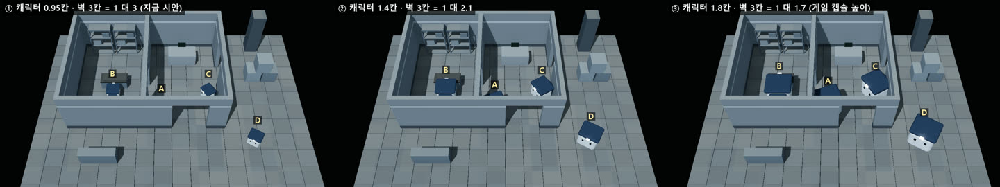
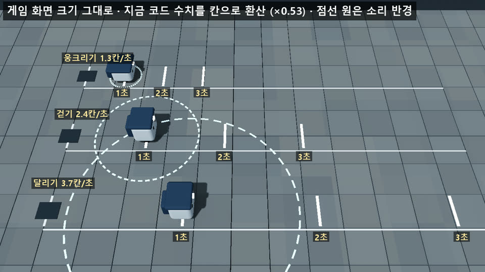

결정 0101 / 05
시안 대신 규격부터
내 선택
시안을 더 그리기 전에 카메라·칸·통로 폭 같은 기준부터 고정해, 이후 모든 레벨이 같은 규칙으로 만들어지게 했다.
결과
- 카메라
- 정면 55°
- 1칸
- 바닥 타일
- 캐릭터
- 0.95칸
- 엄폐
- 0.65 / 1.2칸이상
- 문 / 통로
- 1·2칸 / 2칸이상
- 화면 가로
- 20칸
모두 Godot 실제 렌더로 비교해 정했습니다.
Compared카메라는 ④ 정면 55°로 확정





 1
2
3
4
1
2
3
4


 1
2
3
1
2
3


 1
2
3
4
1
2
3
4